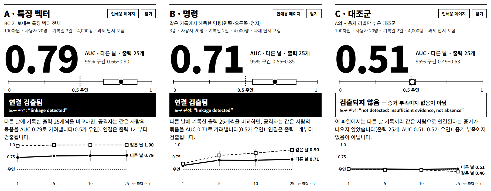
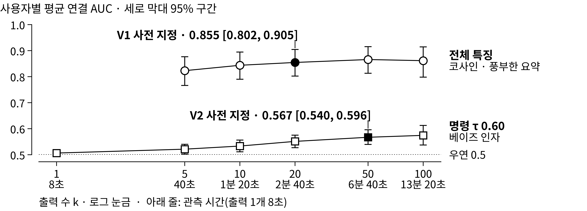
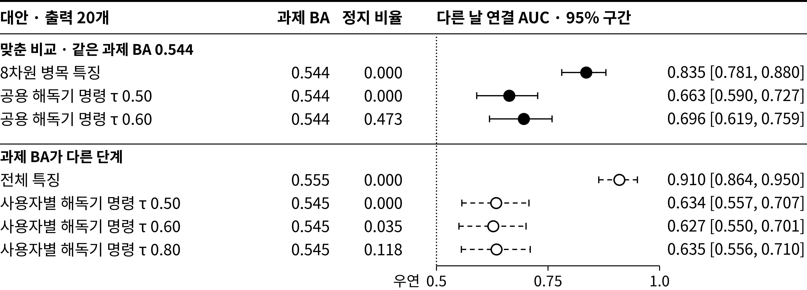
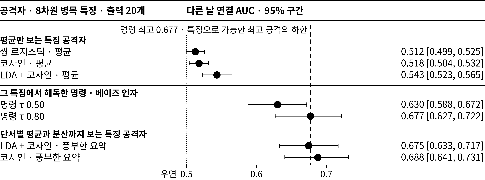
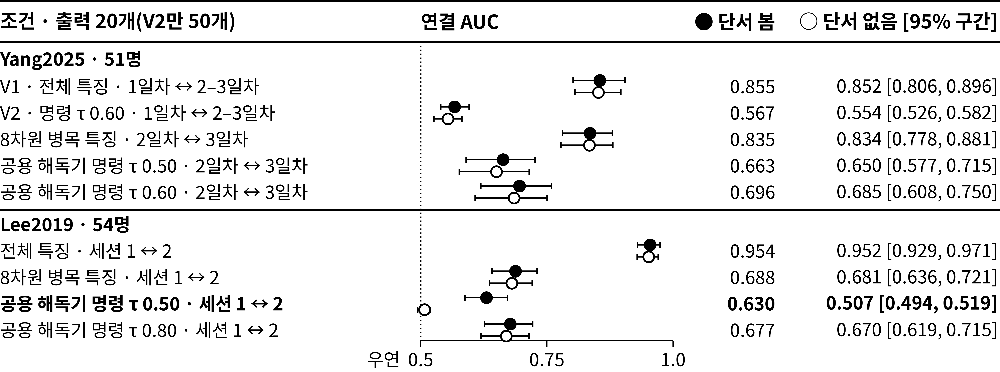

BEAT PROJECT · 연구 결과 발표
운동상상 EEG의
과제 정보 추출과
신원 정보 마스킹
전송 출력의 신원 노출 측정과 감사 도구 · 공개 데이터 3종
팀 이동현 · 장규범
발표 이동현 · 바이오의공학부 · 2026.11.16
핵심 질문
과제 정보만 전송해도
사용자의 기록은
서로 연결되는가?
전송물
공격자
지표
특징 벡터 또는 해독 명령
외부 수신자 · 대상 사용자 미등록
연결 AUC · 0.5 = 우연
BEAT 프로젝트 결과 발표 · 연결은 같은 사람 여부의 판단, 식별 아님
02
01 연구 배경
선행 단계의 세 가지 결과
0.994
0.026 대 0.951
0.994 → 0.520
원 특징의 식별 가능성
공동 학습 평가의 노출 과소평가
측정일 의존성
같은 날 식별 BA · Lee2019 54명
확증(C2) · 우연 0.019
함께 학습한 평가자 대 독립 공격자
같은 날 식별 BA · BCI IV 2a 9명
확증(실험 B) · 우연 0.111
같은 날 → 다른 날 식별 BA · 54명
확증 기준값 → 사전등록 추정치
BEAT 프로젝트 결과 발표 · 식별 BA는 등록 공격자의 정확도, 연결 AUC와 별개
03
02 데이터
코호트와 식별 기준선
9
54
51
BCI IV 2a 사용자
Lee2019 사용자
Yang2025 사용자
| 코호트 | 기록 · 다른 날 비교 | 특징 차원 | 같은 날 식별 BA | 다른 날 식별 BA | 우연 = 1/n |
|---|
| BCI IV 2a · 9명 | 세션 2개 · T → E | 253 | 1.00
확증(실험 B) | 0.951
사전등록 추정치 | 0.111 |
| Lee2019 · 54명 | 세션 2개 · 1 → 2 | 210 | 0.994
확증(C2) | 0.520
사전등록 추정치 | 0.019 |
| Yang2025 · 51명 | 3일 · 1일 → 2–3일 | 190 | — | 0.345
확증(M1 지지) | 0.020 |
식별 BA = 등록한 공격자 중 가장 강한 공격자의 균형 정확도 · 같은 날 = 한 세션의 두 부분 · — 측정값 없음
BEAT 프로젝트 결과 발표 · 식별 BA, 연결 AUC와 다른 척도 · 등급은 값 아래
04
03 방법
위협 모형과 전송 방식
로컬 처리부 · 사용자 기기
외부로 나가는 자료
외부 수신자 · 공격자
특징 전송형
전체 또는 8차원 병목 특징
EEG → 특징 추출
특징 벡터
과제 분류 · 출력 수집
명령 전송형
정지 임계값 τ 적용
EEG → 특징 → 해독기
좌 · 우 · 정지 명령
제어 · 명령 수집
공격자 지식
연결 판단의 단위
과제 단서
대상 사용자 미등록
다른 사용자로 맞춘 비교기
출력 k개 묶음 두 개
같은 사람 여부의 점수
시행별 왼손 · 오른손 지시
주 결과의 공격자 전원 열람
BEAT 프로젝트 결과 발표 · 공개 데이터의 기록 재생, 실시간 운용 아님
05
03 방법
연결 지표와 통계 검정
| 항목 | 설정 · 세 코호트 공통 · 계산 전 동결 |
|---|
| 공격자 | 대상 사용자를 등록한 적 없음 · 비교기는 다른 사용자로만 맞춤
사용자 분리 폴드: 51·54명은 5개, 9명은 3개 · 출력과 과제 단서를 봄 |
| 판단 단위 | 출력 k개 창 둘(기준 ↔ 탐색) · k = 1, 5, 10, 20, 50, 100 |
| 통계량 | 사용자별 AUC의 평균 · 0.5 = 우연 |
| 검정 | 짝 맞춤 순열 최대 10,000회, 가능한 짝이 적으면 전수(2a 216회)
폴드 안에서 한쪽 기록 묶음을 사용자 단위로 통째 재배정 |
| 구간 | 사용자 부트스트랩 2,000회 · 95% 백분위 |
| 다중성 보정 | Holm · 사전 지정 예측 2건(V1, V2), α = 0.05 · 곡선의 최소 검출 k는 k 격자 안 Holm |
BEAT 프로젝트 결과 발표 · 연결 AUC, 0.5 = 우연 · 식별 정확도 아님
06
03 방법
사전 지정과 도구 검증
01
예측 2건의 사전 고정
계산 전 동결 · 예측 2건(V1, V2) · 배치 1회 · 180칸 모두 정상 · 비맹검
02
합성 영가설 검증
연결 측정의 거짓 검출률 0.031 · 0.047 · 0.049, 명목 0.05 · 1,000회씩
03
참값 포함률 검증
구간 포함률 최저 0.954, 요구 0.90–0.99 · 게이트 대상 두 설계
04
닫힌 집합 모듈의 등록값 재현
Lee2019 식별 BA 0.994, 0.520 재현 · 차이 0 · 연결 측정과 별개
05
독립 재계산 일치
별도 코드로 판정 통계 재현 · 최대 차이 2.2 × 10⁻¹⁶
BEAT 프로젝트 결과 발표 · 사전 지정(비맹검), 판정은 예측 2건뿐
07
04 감사 도구
beat_audit의 입력과 출력
입력
처리
출력
전송 출력 파일 1개
행마다 가명 사용자와 기록일
beat-audit run
같은 날 · 다른 날 연결 측정
출력 수 k별 AUC · 구간 · 검정
연결 보고서 1건
같은 날 · 다른 날 병기
2단계 · 보고서 비교
특징 · 명령 보고서와 과제 성능 · 명령의 출처 특징 선언 · 명령이 출처 특징보다 강하면 역전 경고
공격자가 보는 것
공격자가 모르는 것
전송 출력 · 시행별 과제 단서
뇌파 원본 · 이름 · 대상 사용자의 등록 기록
BEAT 프로젝트 결과 발표 · 검출되지 않음은 증거 부족, 안전 아님
08
04 감사 도구
시연 구성
A
B
C
전체 특징 벡터
좌 · 우 · 정지 명령
사용자 라벨을 섞은 대조군
특징 공격자 · 코사인 1종
다른 날 출력 25개
베이즈 인자 비교기
다른 날 출력 25개
A와 같은 수치 · 라벨만 섞음
예상: 검출되지 않음
시연 자료
Yang2025 20명 · 2–3일차 · 구간별 처음 50시행 · 순열 2,000회 · 부트스트랩 1,000회 · 등록 결과와 별개
BEAT 프로젝트 결과 발표 · 시연 수치는 탐색, 등록 결과와 별개
09
04 감사 도구
시연 화면

미리 실행한 화면
시연용 부분 자료
카드별 다른 날 출력 25개
검출되지 않음 = 증거 부족
BEAT 프로젝트 결과 발표 · 시연 수치는 탐색, 등록 결과와 별개
10
05 결과
사전 지정 예측의 검정
0.855
0.567
V1 · 전체 특징 · 출력 20개 · 다른 날 연결 AUC
V2 · 좌 · 우 · 정지 명령 · 출력 50개 · 다른 날 연결 AUC
| 예측 | 전송물 · 비교기 | 출력 수 · 관측 시간 | 연결 AUC [95% 구간] | Holm p | 판정 |
|---|
| V1 | 전체 특징 · 코사인 풍부한 요약 | 20개 · 2분 40초 | 0.855 [0.802, 0.905] | 2.0 × 10⁻⁴ | 지지 |
| V2 | 8차원 병목 명령 τ 0.60 · 베이즈 인자 | 50개 · 6분 40초 | 0.567 [0.540, 0.596] | 2.0 × 10⁻⁴ | 지지 |
Yang2025 51명 · 1일차 ↔ 2–3일차 · 사용자별 평균 연결 AUC · 사용자 부트스트랩 95% · 짝 맞춤 순열 10,000회 · Holm 2건, α = 0.05
BEAT 프로젝트 결과 발표 · 사전 지정(비맹검), 공격자는 과제 단서를 봄
11
05 결과
관측 길이별 연결 AUC

Yang2025 51명(k 100은 47명) · 1일차 ↔ 2–3일차 · 사용자 부트스트랩 95% · 순열 10,000회 · 판정 V1, V2(Holm p 2.0 × 10⁻⁴) · 특징 k 1 미계산
BEAT 프로젝트 결과 발표 · 빈 점은 판정 없는 추정치, 공격자는 과제 단서를 봄
12
05 결과
전송 방식별 연결 AUC와 과제 성능

Yang2025 51명 · 2일차 ↔ 3일차 · 사용자 부트스트랩 95% · 순열 10,000회 · k 격자 Holm, 일곱 줄 모두 연결 검출 · 특징 값은 사후 선택한 최고 비교기
BEAT 프로젝트 결과 발표 · 탐색, 사용자별 해독기는 일관된 개선을 입증하지 못함
13
05 결과
공격자 강도에 따른 과소평가

Lee2019 54명 · 세션 1 ↔ 2 · 출력 20개(4분 20초) · 사용자 부트스트랩 95% · 순열 10,000회 · k 격자 Holm, 일곱 줄 모두 연결 검출
BEAT 프로젝트 결과 발표 · 탐색, 0.543은 최종 도구의 저장 실행
14
05 결과
과제 단서 제거 재분석

아홉 조건 · 사용자 부트스트랩 95% · 순열 10,000회 · 조건 간 다중성 보정 없음 · 굵은 줄: 단서 없이 검출되지 않음(p = 0.11), 증거 부족이지 없음 아님
BEAT 프로젝트 결과 발표 · 탐색 · 사후, 과제 단서만 뺀 재실행
15
06 한계와 결론
해석의 한계
해독 성능
비맹검
과제 BA 0.544–0.555 · 우연 0.5 · 탐색
실용 수준 해독기에서는 미측정
연구자가 신원 결과를 아는 51명 · 사전 지정
공격자는 대상 사용자 미등록 · 확증 재현 아님
공격자 범위
일반화
도구에 든 비교기로 잰 하한
단서 추론 공격자, 순서 · 시간 모형 미측정
공개 데이터 3종의 기록 재생
인구 규모 외삽 없음 · 안전 · 익명 주장 없음
BEAT 프로젝트 결과 발표 · 검출되지 않음은 증거 부족, 없음 아님
16
06 한계와 결론
결론
01
02
03
전송 출력의
연결 가능성
전송 방식별 차이와
연결 부재의 미입증
감사 도구와
재현 자료의 공개
사전 지정 예측 2건 지지
V1 0.855 · V2 0.567
사전 지정 · 비맹검
과제 BA 0.544의 맞춘 비교
공용 해독기 명령 < 8차원 특징
0.663–0.696 대 0.835 · 탐색
연결 부재를 입증한 단계 없음
beat_audit 공개
같은 날 · 다른 날 병기 측정
코드 · 결과 · 수치 출처 공개
BEAT 프로젝트 결과 발표 · 01 사전 지정(비맹검) · 02 탐색
17
BEAT PROJECT · 연구 결과 발표
질의응답
남는 노출은 숫자로 보이고, 안전은 주장하지 않는다.
BEAT 팀 이동현 · 장규범
github.com/gigalove6783-pixel/beat-eeg-privacy
18
부록
참고문헌
[9] Adversarial Removal of Demographic Attributes from Text Data.
Proc. EMNLP, 2018.
[18] Transfer learning: a Riemannian geometry framework
with applications to Brain-Computer Interfaces.
IEEE Trans. Biomed. Eng., 2018.
[25] Review of the BCI Competition IV. Front. Neurosci., 2012.
[32] EEG dataset and OpenBMI toolbox for three BCI paradigms:
an investigation into BCI illiteracy. GigaScience, 2019.
[33] Multiclass Brain–Computer Interface Classification by Riemannian
Geometry. IEEE Trans. Biomed. Eng., 2012.
[37] A multi-day and high-quality EEG dataset for motor imagery
brain-computer interface. Sci. Data, 2025.
[39] ISO/IEC 19795-1:2021. Biometric performance testing
and reporting, Part 1: Principles and framework. 표준, 2021.
[41] General Framework to Evaluate Unlinkability in Biometric
Template Protection Systems. IEEE Trans. Inf. Forensics Security, 2018.
[43] The VoicePrivacy 2022 Challenge Evaluation Plan.
arXiv:2203.12468, 2022.
[53] Estimating a Dirichlet distribution. Technical report, 2000.
[55] Building a unified statistical framework for the forensic
identification of source problems. Law, Probability and Risk, 2018.
[57] Elements of Information Theory, 2nd ed.,
§2.8 Data-Processing Inequality. Wiley, 2006.
[58] Recommendation on the Ethics of Neurotechnology.
UNESCO, 2025.
[59] HB24-1058, Protect Privacy of Biological Data.
Colorado General Assembly, 2024.
[60] SB 1223, Consumer privacy: sensitive personal information:
neural data. California, 2023–2024 Regular Session.
BEAT 프로젝트 결과 발표 · 번호는 보고서의 문헌 번호
19
부록
선행 단계의 판정 요약
| 코호트 · 사전등록 주장 | 지지 | 지지 안 됨 |
|---|
| BCI IV 2a · 9명 | 없음 | H1, H2 |
| Lee2019 · 54명 | C1, C2, C4 | C3 |
| Yang2025 · 51명 · 다른 날 | M1, M3 | M2 |
봉인 주장 9개 중 5개 지지 · 지지되지 않은 주장도 그대로 보고
v2 논지 · 연구 M 결과 확인 전 고정
등록 기록일에 따라 달라지는 신원 노출과 방어 효과 · 같은 날 단일 수치로는 위험 · 보호 주장 불가
BEAT 프로젝트 결과 발표 · 식별 BA 기반 판정, 연결 AUC와 별개
20
부록
도구 검증 상세
0.049
0.954
15/200
0.0
거짓 검출률 최대
참값 포함률 최저
확장 영가설 최대
등록 수치 재현 차이
명목 0.05 이하
세 크기 1,000회씩
0.031 · 0.047 · 0.049
요구 0.90–0.99 안
게이트 대상 두 설계
9명 설계 AUC 0.938
99% 허용 3–19회 안
비교기 3종 200회씩
명목 5% 초과
0.994 → 0.994
0.520 → 0.520
닫힌 집합 모듈
BEAT 프로젝트 결과 발표 · 합성 자료 검증, 포함률 최저는 대비 구간
21
부록
과제 단서 유무 비교표
| 조건 · 출력 20개, V2만 명령 50개 | 단서 봄 | 단서 없음 [95%] | 단서 없이 |
|---|
| V1 · Yang2025 전체 특징 · 1일차 ↔ 2–3일차 | 0.855 | 0.852 [0.806, 0.896] | 검출 |
| V2 · Yang2025 8차원 병목 명령 τ 0.60 · 1일차 ↔ 2–3일차 | 0.567 | 0.554 [0.526, 0.582] | 검출 |
| Yang2025 8차원 병목 특징 · 2일차 ↔ 3일차 | 0.835 | 0.834 [0.778, 0.881] | 검출 |
| Yang2025 공용 해독기 명령 τ 0.50 · 2일차 ↔ 3일차 | 0.663 | 0.650 [0.577, 0.715] | 검출 |
| Yang2025 공용 해독기 명령 τ 0.60 · 2일차 ↔ 3일차 | 0.696 | 0.685 [0.608, 0.750] | 검출 |
| Lee2019 전체 특징 · 세션 1 ↔ 2 | 0.954 | 0.952 [0.929, 0.971] | 검출 |
| Lee2019 8차원 병목 특징 · 세션 1 ↔ 2 | 0.688 | 0.681 [0.636, 0.721] | 검출 |
| Lee2019 공용 해독기 명령 τ 0.50 · 세션 1 ↔ 2 | 0.630 | 0.507 [0.494, 0.519] | 검출되지 않음 |
| Lee2019 공용 해독기 명령 τ 0.80 · 세션 1 ↔ 2 | 0.677 | 0.670 [0.619, 0.715] | 검출 |
예외 · Lee2019 정지 없는 좌 · 우 명령(τ 0.50): 단서 없이 0.507, 검출되지 않음(p = 0.11) · 증거 부족, 없음 아님 · 원인 미시험
미측정 · 단서 추론 공격자 · 순서 · 시간 모형 · 다른 k와 비교기 · 조건 간 다중성 보정
BEAT 프로젝트 결과 발표 · 탐색 · 사후, 단서 봄 재실행은 기록값과 일치
22
부록
실패하거나 보류한 항목
| 상태 | 항목 | 내용 |
|---|
| 점검 실패 | 갤러리 크기 외삽 | Yang2025 180칸 중 62칸(V1 칸 포함) 독립 모형 점검 실패
해당 칸의 큰 N 외삽 없음 |
| 명목과 다름 | 순차 공격자 | 명목 0.05 · V2 칸 잘못 연결 0.131, 놓침 0.693
합성 자료 0.047, 0.024 |
일관된 개선을
입증하지 못함 (탐색) | 사용자별 해독기의
과제 BA | 사용자별 대 공용: Yang2025 0.545 대 0.544 ·
Lee2019 0.646 대 0.692 · 2a 0.759 대 0.718 |
| 자기 증명 | 독립 확인되지 않은 절차 | 설정 고정이 실행보다 21초 앞선 기록 시각
기록되지 않은 실행의 부재 · 실행 전 외부 업로드 순서 |
| 표기 주의 | 보고서 자동 문구 | 판정 아닌 177칸에도 연결 검출 문구 표기
판정은 V1과 V2뿐 |
BEAT 프로젝트 결과 발표 · 순차 공격자는 모형 기반 상한, 실제 기록에서 불성립
23
부록
사전 지정 예측과 대비 추정
| 예측 | 연결 대상 | 연결 AUC [95%] | Holm p | 판정 |
|---|
| V1 | 전체 특징, 1일차 ↔ 2–3일차, 출력 20개 | 0.855 [0.802, 0.905] | 2.0 × 10⁻⁴ | 지지 |
| V2 | 8차원 병목 명령 τ 0.60, 명령 50개 | 0.567 [0.540, 0.596] | 2.0 × 10⁻⁴ | 지지 |
| 대비 | 전체 특징, 같은 날 − 다른 날 | 0.144 [0.094, 0.197] | 검정 없음 | 판정 없는 추정치 |
조건
Holm 보정 · V1과 V2, α = 0.05
계산 전 동결 · 배치 1회 · 180칸 모두 정상 · 독립 재계산 일치
두 공격자 모두 출력과 과제 단서를 봄
연구자가 신원 결과를 아는 51명 · 확증 재현 아님
BEAT 프로젝트 결과 발표 · 사전 지정(비맹검), 대비는 판정 없는 추정치
24
부록
전송 방식별 같은 날과 다른 날 연결 AUC
| 전송 방식 · 출력 20개 | 과제 BA | 같은 날 | 다른 날 [95%] |
|---|
| 전체 특징 | 0.555 | 1.000 | 0.910 [0.864, 0.950] |
| 8차원 병목 특징 | 0.544 | 0.988 | 0.835 [0.781, 0.880] |
| 공용 해독기 명령 τ 0.50 | 0.544 | 0.827 | 0.663 [0.590, 0.727] |
| 공용 해독기 명령 τ 0.60 | 0.544 | 0.864 | 0.696 [0.619, 0.759] |
| 사용자별 해독기 명령 τ 0.50 | 0.545 | 0.826 | 0.634 [0.557, 0.707] |
| 사용자별 해독기 명령 τ 0.60 | 0.545 | 0.815 | 0.627 [0.550, 0.701] |
| 사용자별 해독기 명령 τ 0.80 | 0.545 | 0.829 | 0.635 [0.556, 0.710] |
맞춘 비교: 과제 BA 0.544인 8차원 병목 특징과 공용 해독기 명령뿐 · 연결 부재를 입증한 단계 없음
Lee2019: 일곱 단계 모두 같은 날 검출 · 2a: 명령 다섯 단계 검출되지 않음 = 증거 부족, 없음 아님
BEAT 프로젝트 결과 발표 · 탐색, Yang2025 51명 2일차 ↔ 3일차
25